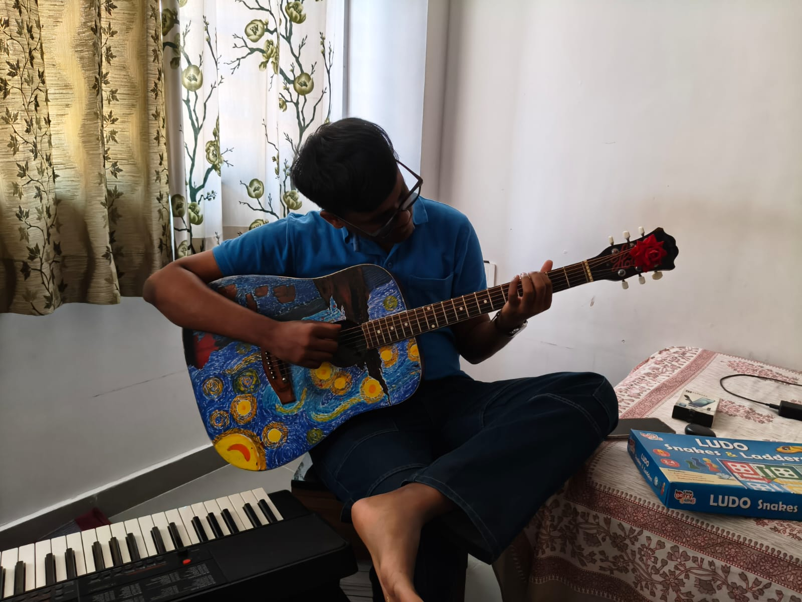
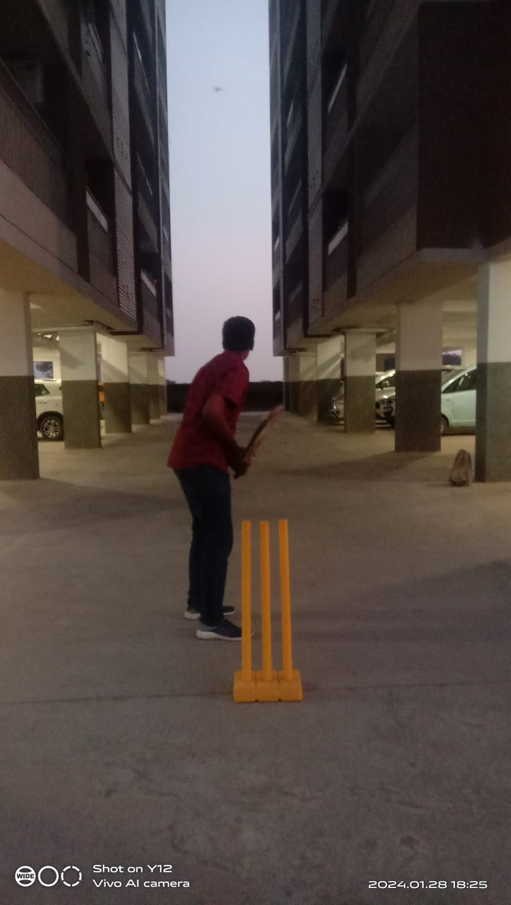
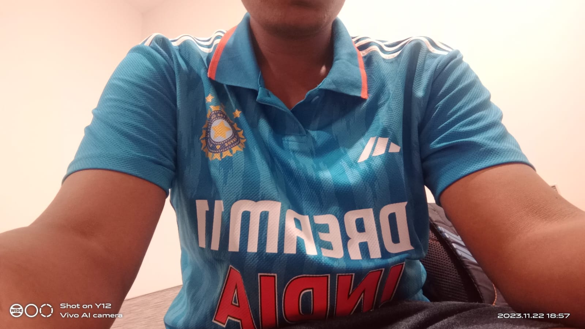
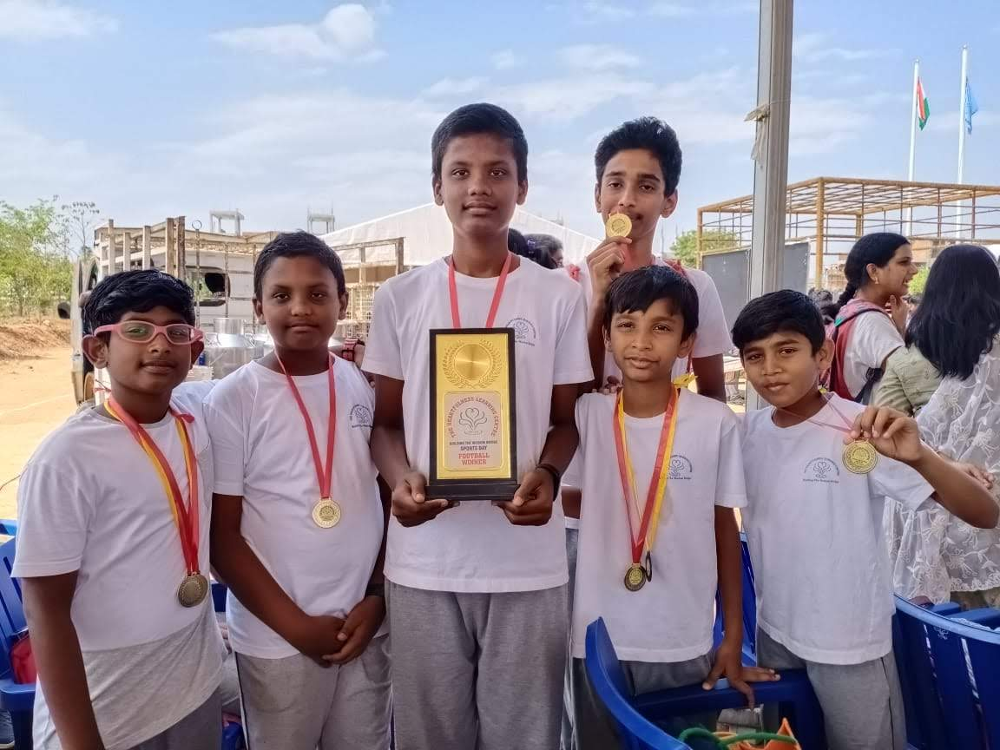
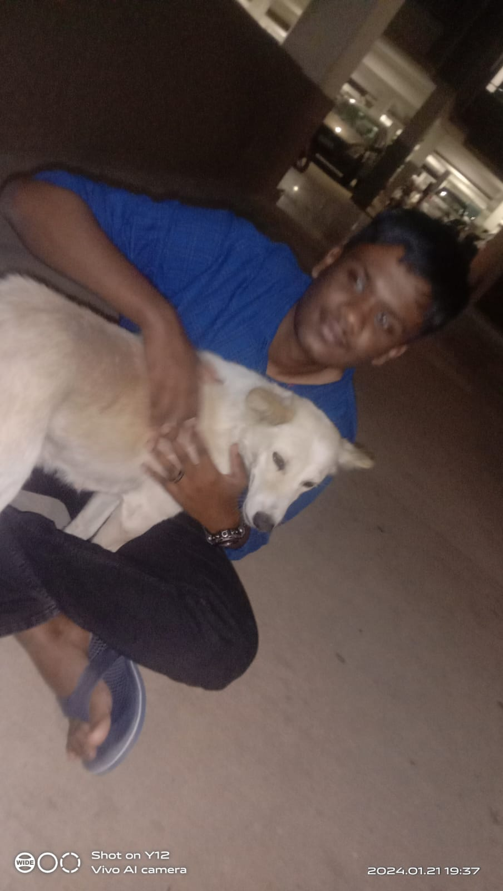
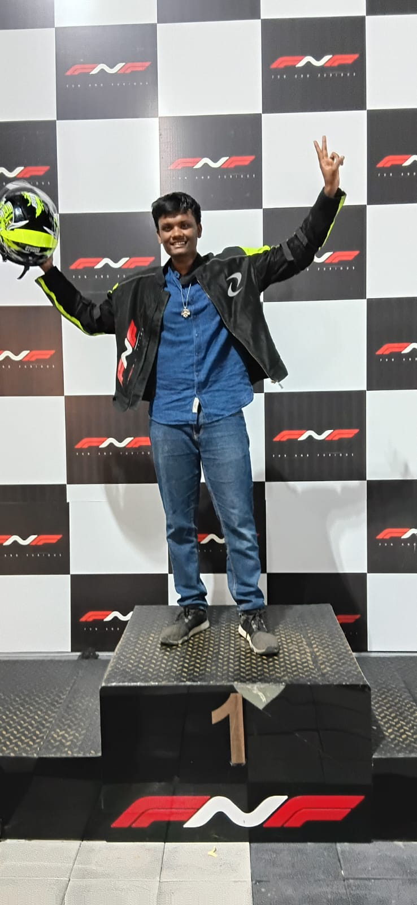

Music is my primary hobby and a huge part of my life. It acts as a companion through
every
mood. I enjoy
listening to a wide variety of genres, listening to acoustic guitar music, and playing
instruments like
the piano, which allows me to
express creativity and find peace.
Here's a piece I've played on the piano!

Cricket is more than just a sport to me; it is a passion. The thrill of the match, the strategy on the field, and the team spirit make it my absolute favorite game. I love collecting jerseys and playing regularly.

My passion for cricket is so strong that even the lockdown couldn't stop me—I continued playing inside the house!

Apart from cricket, I am an active sports enthusiast.

I am a massive dog lover. Spending time with dogs, understanding their behavior, and enjoying their loyal company is something I cherish deeply.

Go Karting is my need for speed! I love the adrenaline rush of racing on the track and the focus it requires.